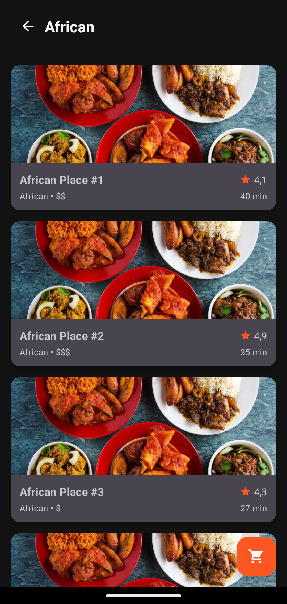

GoFood simplifie votre quotidien en connectant les meilleurs restaurants locaux directement à votre porte. Notre algorithme de livraison intelligent garantit des repas chauds et rapides, tout en offrant une interface utilisateur fluide et gourmande.
Avec une gestion intuitive des commandes et des paiements sécurisés, GoFood est le compagnon idéal de vos soirées et déjeuners pressés.